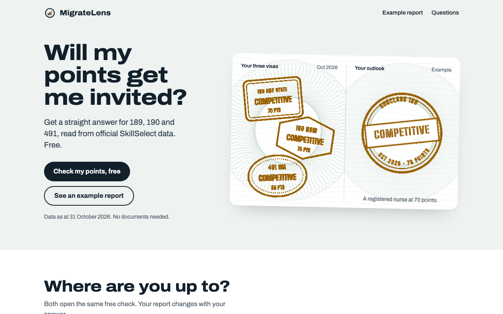
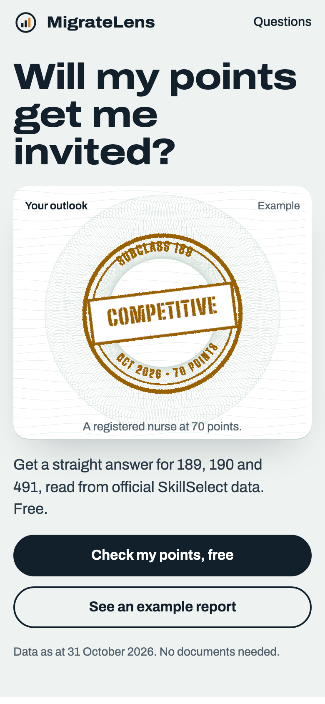
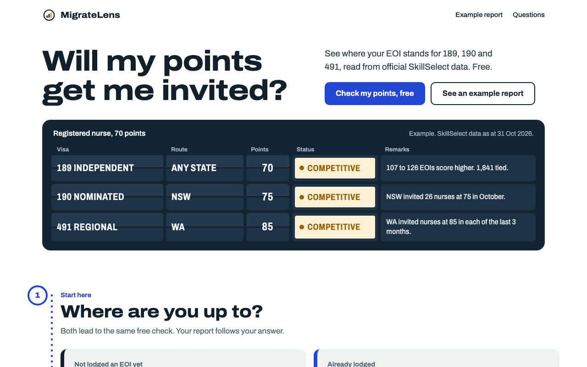
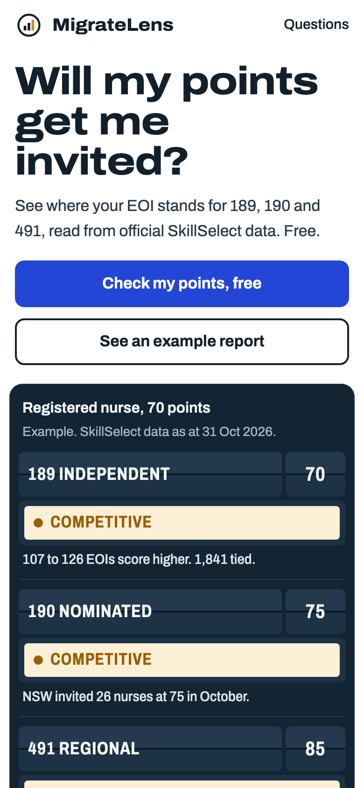
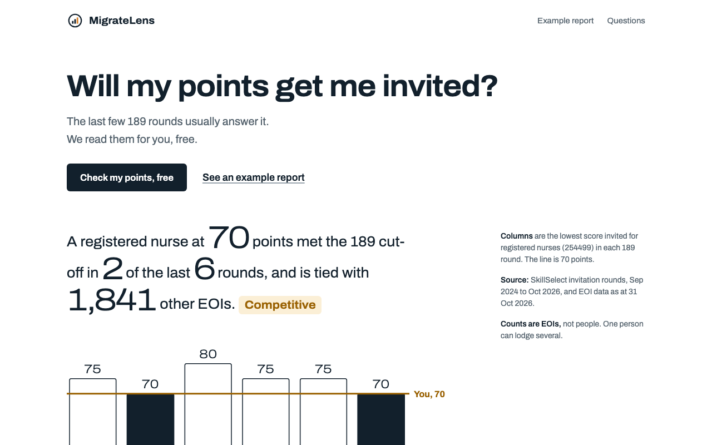
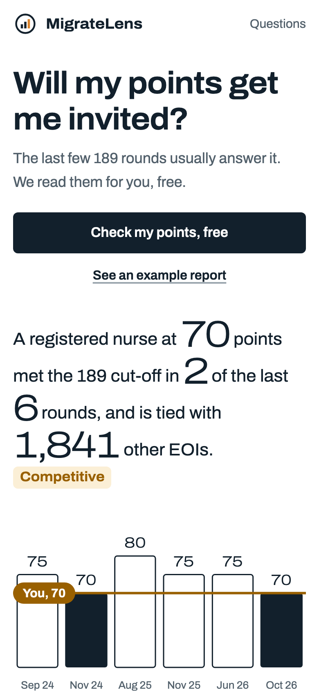
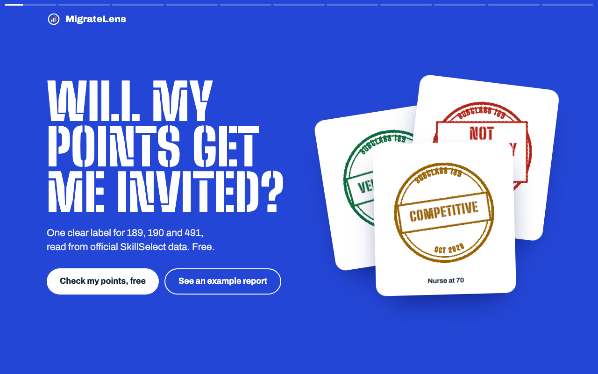
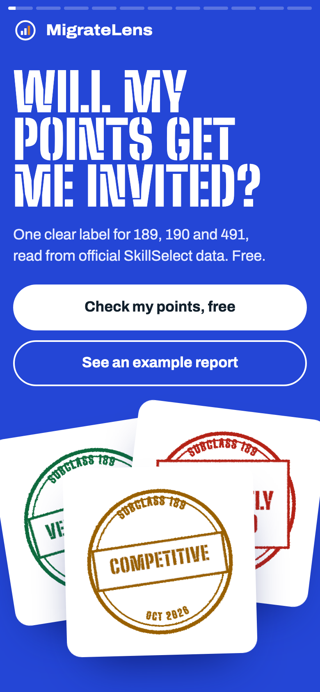

Homepage directions
Four ways to open MigrateLens, all leading into the locked report (Option E). Same content in each; open one on your phone too. Figures are real (SkillSelect, 31 Oct 2026).


A. Stamp desk
The report's ink stamps on an open passport. The try-it stamps your label as you choose.


B. Departures
A split-flap board shows your three visas; the page is a route of stops to your report.


C. The numbers
Quiet and editorial: real numbers set large in plain sentences, and a slider that moves your line across the cut-offs.


D. Story
A bold scroll story for phones: one label per screen in giant stencil type, and the try-it floods with your label's colour.
Notes on each direction (palette, type, risks) are in notes.md in this folder.